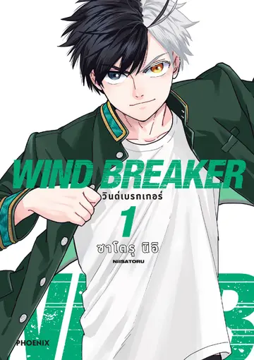
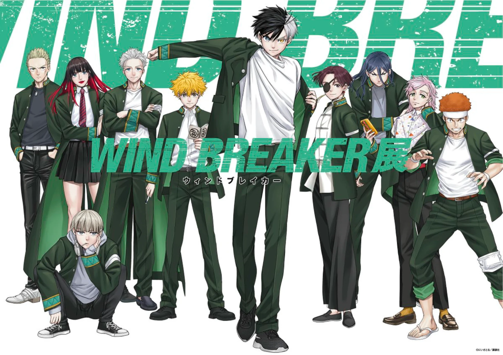

WIND BREAKER
เรียนไม่เด่นเน้นวิวาท

ฉันมาที่ฟูรินเพื่อทะเลาะวิวาท ทว่า โรงเรียนแห่งนี้กลับถูกขนานนามว่า "โบฟูริน" เป็นโรงเรียนที่คอยปกป้องเมือง
นับแต่นี้ไป มันผู้ใดทำร้ายผู้อื่น
ทำลายข้าวของ
หรือเข้ามาด้วยจิตมุ่งร้าย
โบฟูรินจะกำราบให้หมด
ไม่ว่าจะเป็นใครก็ตาม
เมื่อกำปั้นไม่ได้มีไว้เพื่อทำลาย แต่มีไว้เพื่อ "ปกป้อง"... พบกับเรื่องราวของ ซากุระ ฮารุกะ เด็กใหม่ผู้ที่หวังใช้กำลังก้าวสู่จุดสูงสุดของโรงเรียนมัธยม ทว่าเขากลับต้องพบกับกลุ่มนักเรียนที่รวมตัวกันใช้กำลังเพื่อทำหน้าที่ปกป้องเมืองจากอันตราย มังงะแอ็กชันสุดมันส์ฉากต่อสู้ดุเดือด ที่จะพาคุณไปสัมผัสความอบอุ่นของมิตรภาพและการเติบโตที่จะทำให้คุณตกหลุมรักตั้งแต่เล่มแรก

เรื่องย่อ
ในฤดูใบไม้ผลิ ซากุระ ฮารุกะ เด็กหนุ่มมัธยมปลาย
ได้เดินทางมายังโรงเรียนนักเลงชื่อดังนามว่าฟูริน
เพื่อก้าวขึ้นสู่จุดสูงสุดของที่นั่น
ก่อนพบว่าโรงเรียนดังกล่าวคือศูนย์รวมของเหล่านักเรียนผู้พิทักษ์
ซึ่งได้รับการขนานนามจากชาวเมืองว่า ‘โบฟูริน’
ทำให้เขาต้องเข้าร่วมการต่อสู้ในฐานะสมาชิกคนหนึ่ง
ผู้แต่ง
ซาโตรุ นิอิ
สิ่งที่ได้จากการอ่านเรื่องนี้?
1. การก้าวข้ามการอคติ
หนังสือเล่มนี้จะทำให้คุณได้รู้ว่า "คุณค่าของคนเราไม่ได้อยู่ที่รูปลักษณ์ภายนอก แต่อยู่ที่การกระทำและการเลือกตัวตนของเราเอง” มีหลายตัวละครมีที่รูปลักษณ์ต่างจากจากคนอื่น แต่ก็ได้เรียนรู้และเปิดใจยอมรับตัวเอง
2. ใช้พลังในทางที่ถูกต้อง
หนังสือเรื่องนี้แสดงให้เห็นว่ากลุ่มโบฟูรินไม่ได้ใช้กำลังเพื่อต่อยตีเพื่อความสนุกสนาน แต่ใช้ความสามารถของตัวเองเพื่อปกป้องผู้คนในเมืองและช่วยเหลืองานด้านต่าง ๆ
3. มิตรภาพและการเปิดใจรับความช่วยเหลือ
หนังสือเรื่องนี้แสดงให้เห็นว่า "ไม่มีใครจำเป็นต้องแบกรับทุกอย่างไว้คนเดียว” การยอมรับความช่วยเหลือจากคนอื่น ไม่ใช่ความอ่อนแอ แต่คือการสร้างมิตรภาพและความเชื่อใจซึ่งกันและกัน
4. ความเข้าอกเข้าใจผู้อื่น (Empathy & Understanding)
ตัวละครในเรื่องไม่ได้มีแค่ขาวหรือดำ หนังสือเรื่องนี้แสดงให้เห็นถึงปูมหลังตัวละคร ทำให้มองเห็นถึงเหตุผลลึก ๆ และความผิดพลาดที่เกิดขึ้นในจิตใจมนุษย์ ทำให้ผู้อ่านเกิดความเข้าใจและเห็นอกเห็นใจผู้อื่นมากขึ้น
สร้างเป็น Anime
WIND BREAKER ดัดแปลงเป็น anime เผยแพร่ในปี 2024